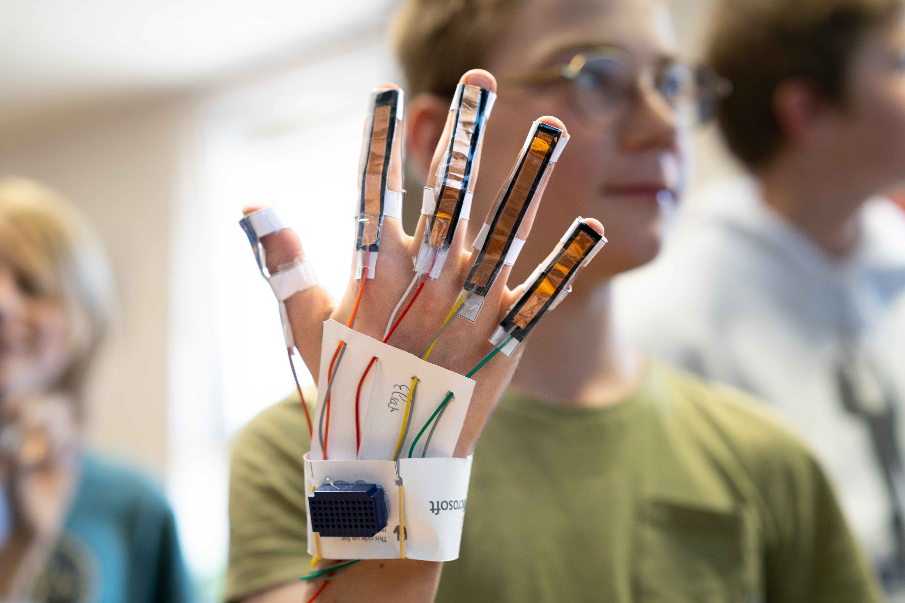

1
Bouw
Leerlingen maken een handschoen met sensoren en koppelen die aan een Arduino en vijf servo's.
Project Robothand
Leerlingen bouwen een sensorhandschoen, sturen servomotoren aan met Arduino en ontdekken hoe beweging wordt omgezet naar data, code en mechanische actie.
Hoe werkt het?
Leerlingen bouwen een eenvoudige sensorhandschoen en koppelen die aan een robothand. De Arduino leest vingerbewegingen, stuurt servomotoren aan en maakt zichtbaar hoe data een fysieke beweging kan veroorzaken.
Leerlingen maken een handschoen met sensoren en koppelen die aan een Arduino en vijf servo's.
Ruwe sensorwaarden worden omgezet naar bruikbare vingerposities: van gestrekt tot gebogen.
De Arduino vertaalt metingen naar servohoeken, zodat de robothand de menselijke hand volgt.
De opstelling
Een vinger buigt, de sensorwaarde verandert en de Arduino stuurt een servo aan. Zo zien leerlingen meteen of hun code, bedrading en mechaniek goed samenwerken.

Wat leer je?
Ze lezen vingerwaarden uit en controleren of die waarden kloppen met wat ze zien.
Ze sturen servo's aan en zien meteen wat een kleine wijziging in de code doet.
Ze volgen de waarden per vinger en gebruiken die om de opstelling bij te sturen.
Ze testen of de robothand eenvoudige gebaren zoals blad, steen en schaar herkent.
Plaats in de leerlijn
De platformen bouwen het computationeel denken op. De projecten gebruiken dat denken in een vakoverschrijdende opdracht waarin leerlingen bouwen, meten, testen en besluiten.
Voor leerkrachten
Dit project hoort aan het einde van een traject waarin leerlingen al met Arduino gewerkt hebben. Ze brengen hun voorkennis samen in een groter systeem: sensoren uitlezen, servo's aansturen, testen, bijsturen en uitleggen waarom de robothand wel of niet goed reageert.
Benodigdheden
Een Arduino UNO of vergelijkbaar bord dat via USB met de computer verbindt.
Flexsensoren of vergelijkbare sensoren om vingerbuiging meetbaar te maken.
Vijf servo's die de vingers van de robothand kunnen bewegen.
Chrome of Edge voor WebSerial. Zonder hardware kan de demomodus gebruikt worden.
Privacy
De webomgeving draait als gewone website. Data blijft lokaal in de browser en leerlingen werken zonder account.
Verbind de Arduino, test de demomodus of gebruik de visualisatie om sensorwaarden en beweging te bespreken.